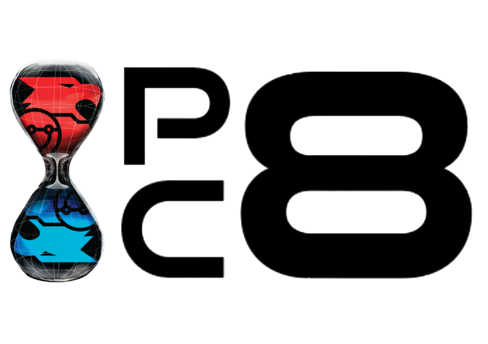

President's Cup Cybersecurity Competition
This operation was established in response to Executive Order 13870.
This operation was established in response to Executive Order 13870.
Established to identify, recognize, and reward the best cyber talent across the federal workforce, the President's Cup Cybersecurity Competition challenges participants to outthink and outwit their competitors in a series of cyber challenges based on real-world situations.
Ranging from defending networks to analyzing threats and uncovering vulnerabilities, the competition highlights the importance of cybersecurity readiness, encourages professional growth, and showcases the skills of those working to keep our nation secure. Only the sharpest minds will make it through two virtual qualifying rounds to the finals in the National Capital Region.
In it's eighth year, the President's Cup continues to foster collaboration, raise awareness of cybersecurity careers, and recognize the dedication of professionals who protect our digital infrastructure.

Registration Open
President’s Cup 8 invites competitors to celebrate America’s 250 year journey of innovation while putting cybersecurity skills to the test.
Registration is now open for individuals and teams.
Step into the timeline, register, and get ready for the journey. Want to prepare before the competition begins? Visit the Practice Area to explore challenges from previous President’s Cup competitions.


View the competition dates and registration schedule as text.